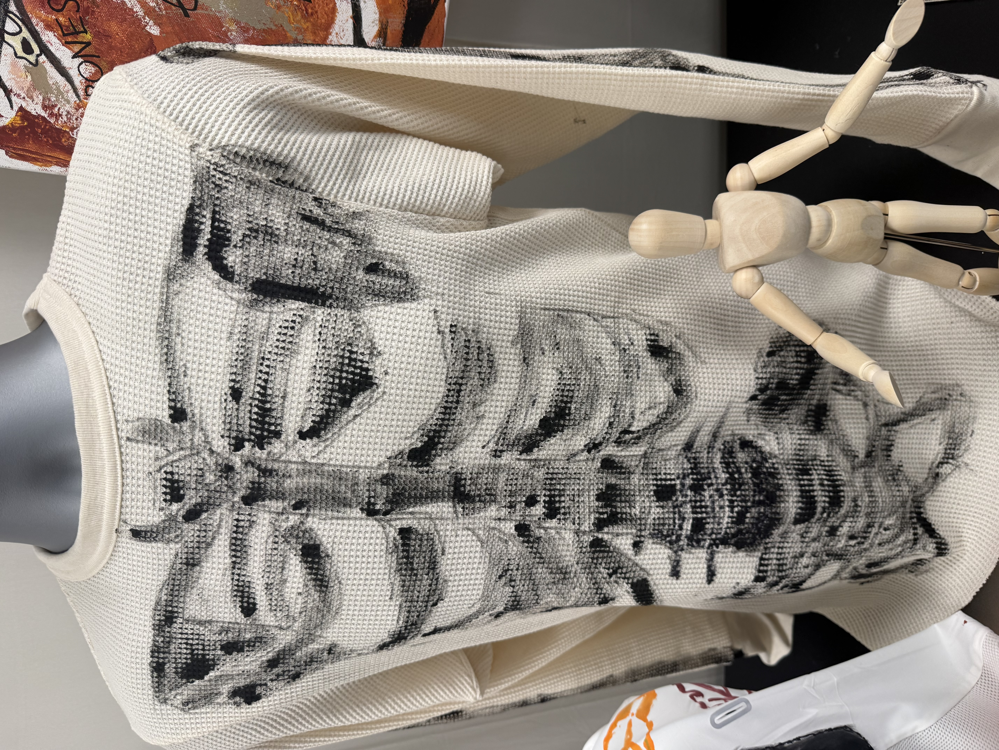

Sweater Piece
The White Bones Sweater is the lighter version of the bone sweater concept. It uses a white base with black painted skeleton details, making the bones look clear, sharp, and ghostlike.
This piece is built around contrast. The white sweater creates a clean background, while the black bone design gives it a rough, hand-painted feeling.
The white color connects to bones more directly, while the black markings create the feeling of a ribcage or skeletal frame across the body.
This sweater balances the collection by giving the bone theme a brighter colorway. It still feels eerie and fall-inspired, but less heavy than the black version.
← Back to Collection